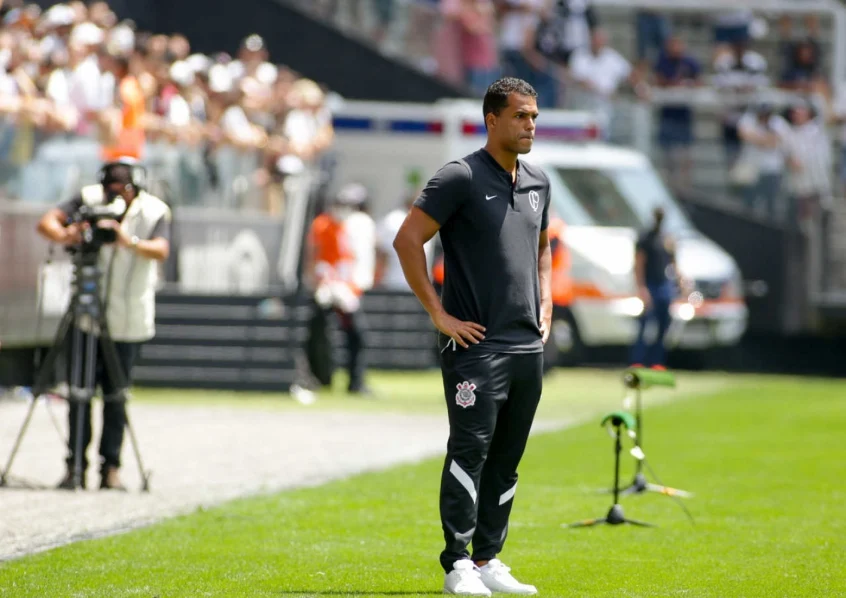

Clique Aqui para voltar
Clique Aqui para voltar
Torcida segue desconfiando do trabalho de Fernando Lázaro
Técnico não vem desempenhando bons resultandos, deixando a torcida alertada;
O ex analista de desempenho Fernando Lázaro, e agora técnico do Corinthians segue sendo questionado sobre sua capacidade para estar a frente do time do povo.Como esperado, a torcida não está contente com o desempenho atual do técnico, até agora foram 3 jogos(1 derrota/ 1vitoria/1 empate), o time vem sofrendo muito pela falta da criação no meio campo e com isso o unico jogador que vem sendo a "salvação" é o meia Renato Augusto de 34 anos. Porém, o técnico Fernando lazaro vem cometendo gafes e uma delas vem sendo a ausência de um segundo criador,o meia Giuliano desde que chegou nunca conseguiu ter uma uma sequência adequada para mostrar o que realmente consegue desempenhar, e assim, a fiel tinha esperanças de ver o meia jogando mais e em sua posição.
O técnico Lázaro vem colocando o meia um pouco mais para trás e assim não conseguindo empenhar seu melhor futebol, a segunda gafe é a presença de muitos volantes, no jogo contra o RB bragantino o técnico escalou o time com tres volantes e um meia de criação, e assim o time não conseguiu jogar o seu melhor futebol. o Corinthians enfrenta o Guarani pela 4 rodada do paulistão o possível time para o confronto é: Cássio; Fagner, Gil, Balbuena e Fábio Santos; Du Queiroz, Maycon, Renato Augusto e Adson; Róger Guedes e Yuri Alberto.
Escrito por Matheus Schmitt, 25/01